1. Four Fossils will spawn everyday (unless they were not collected the day before, only 1 spawns)
2. Pick fruit and chop wood!
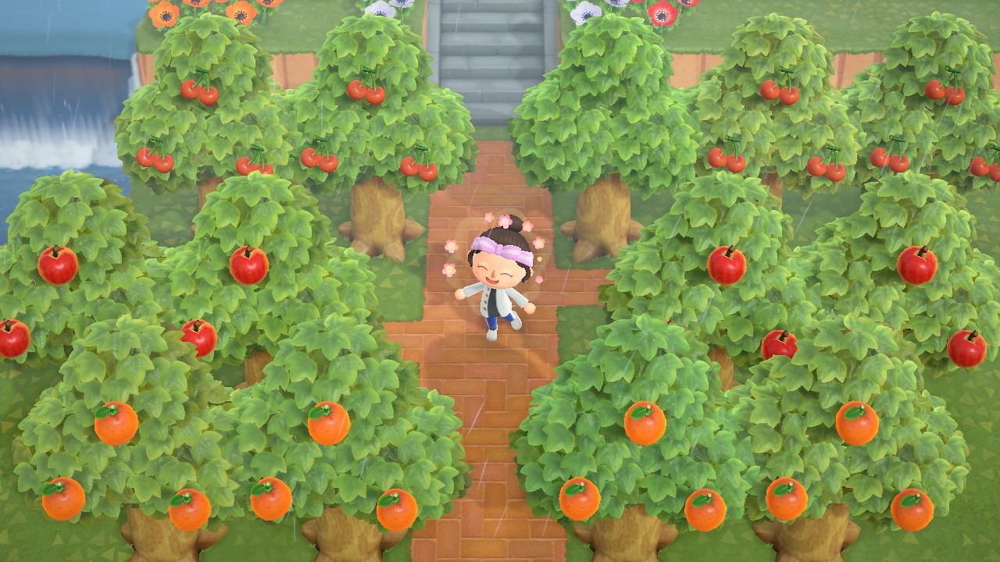
3. Stop by Residential Services and open the Nook Stop Terminal that looks like an ATM.
This will give you the daily Nook Miles, and then check the Nook Shopping
everyday, two fence DIYs will change. and Nook Miles redemption
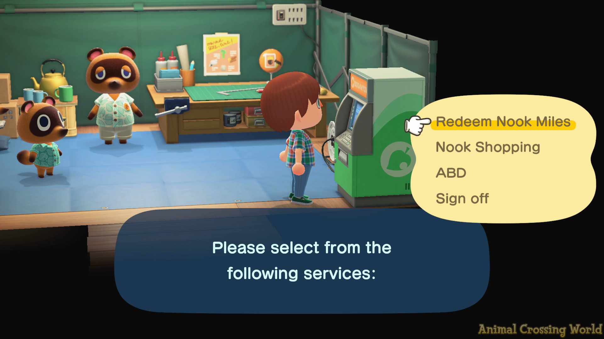
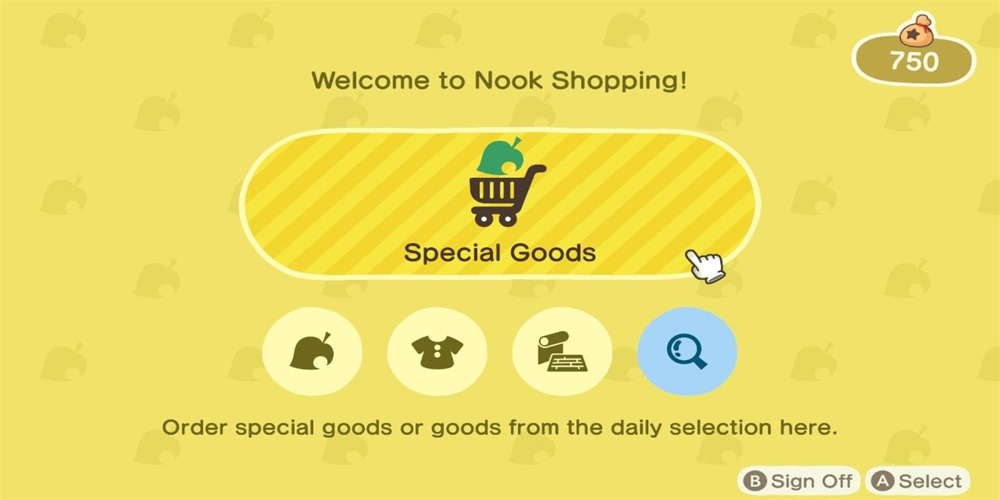
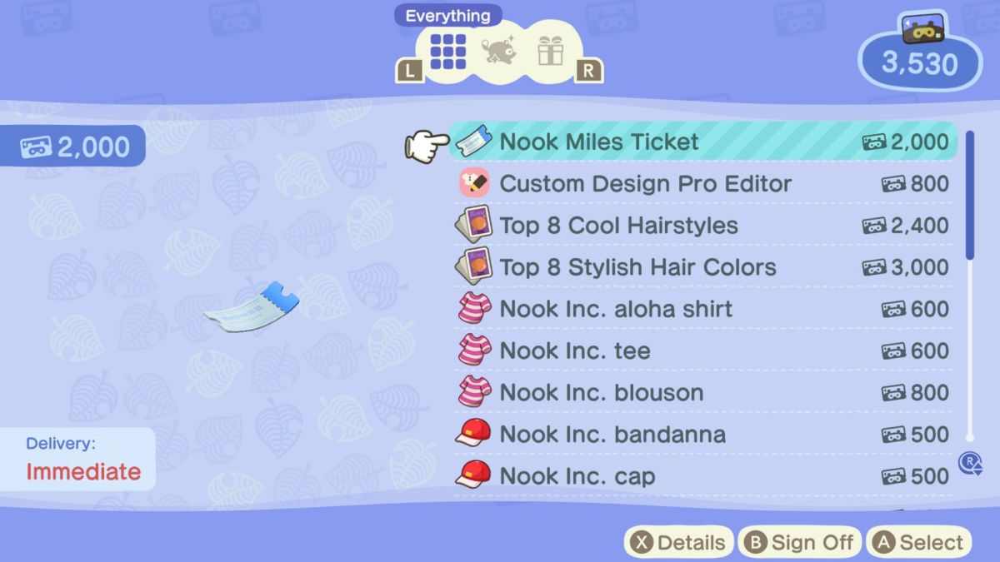
4. Beach run! Sell seashells for Nook Miles, one message bottle will spawn everyday
for a DIY recipe and check for Guliver! (He will reward you for helping him)
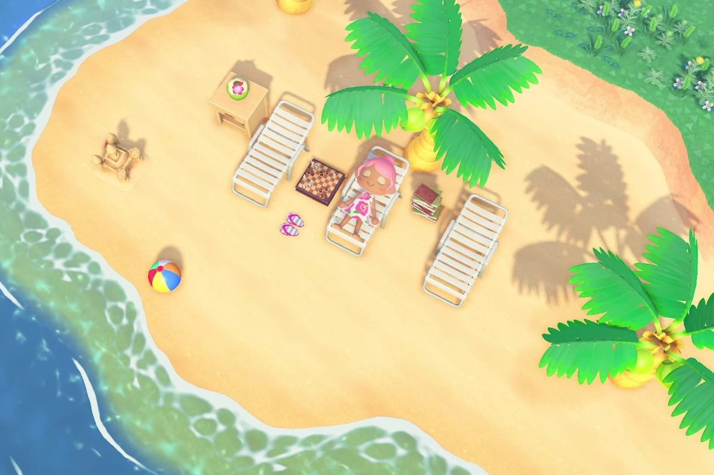
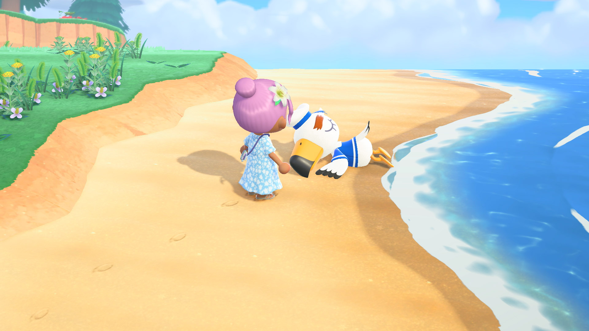
5.Check for Visitors! (Redd, CJ, Flick, Celeste, Label, Kicks, K.K Slider, Leif, Saharah)
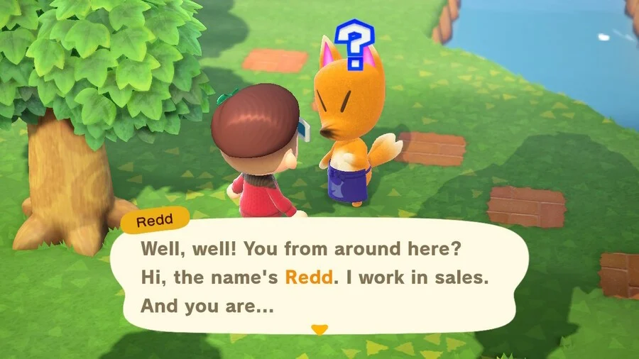
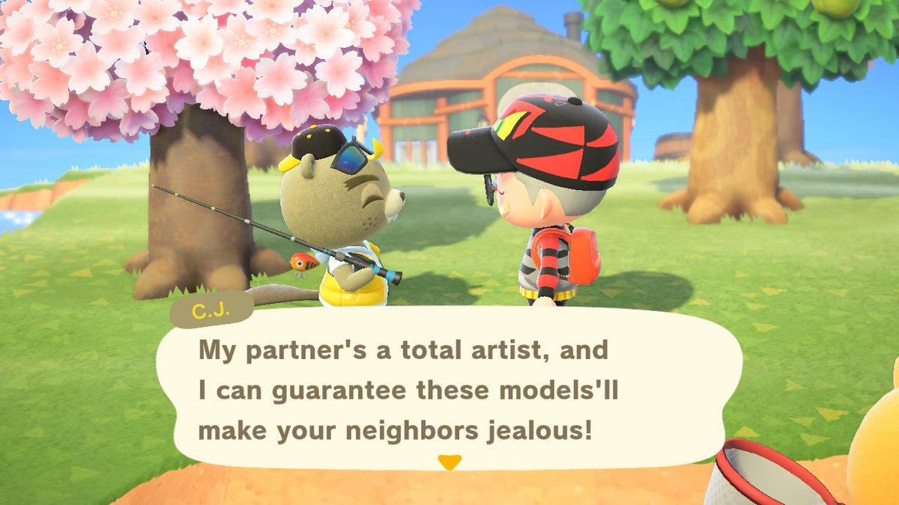
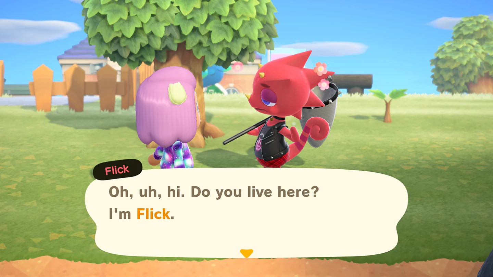
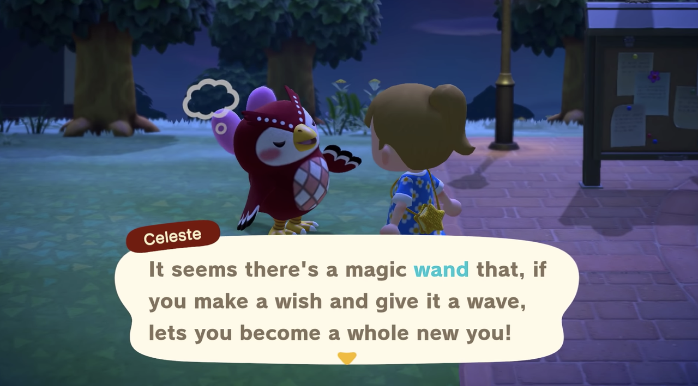
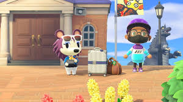
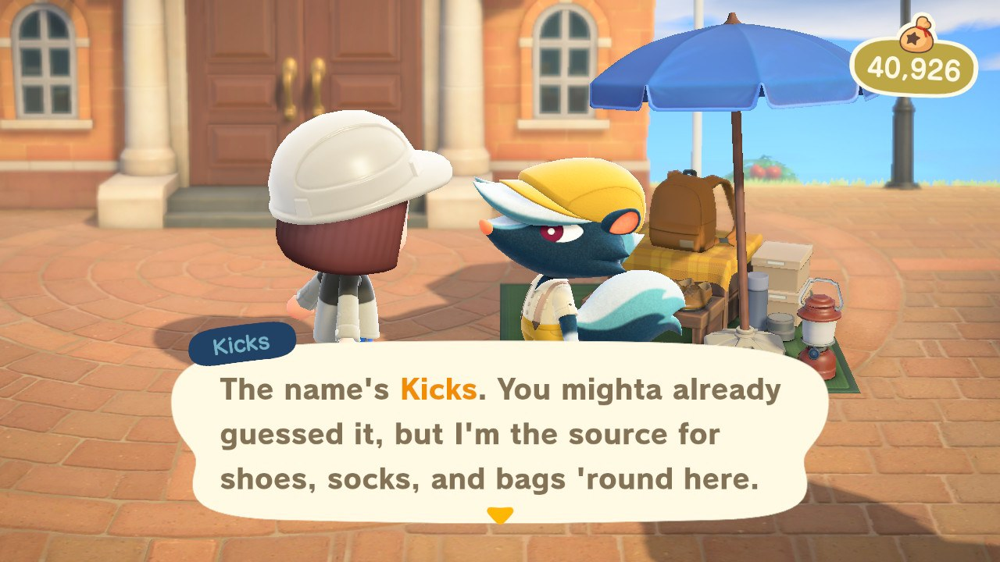
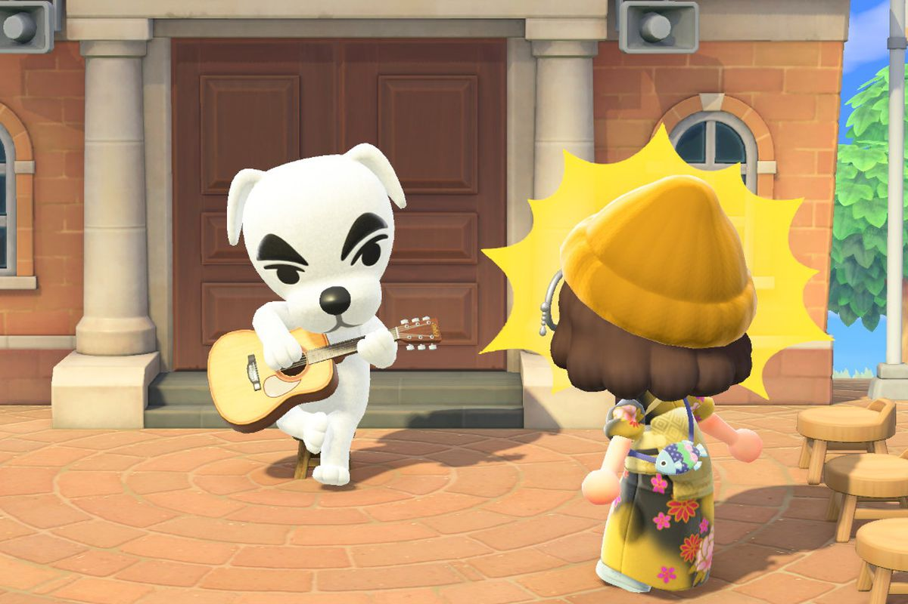
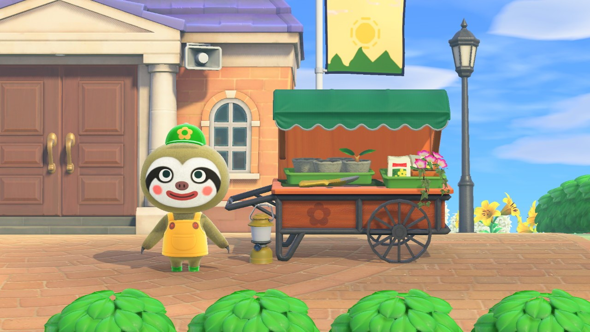
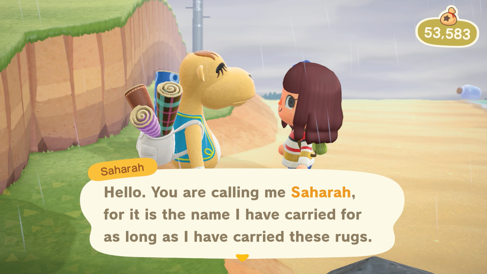
6. Check Nook Cranny and Able Sisters for new items!
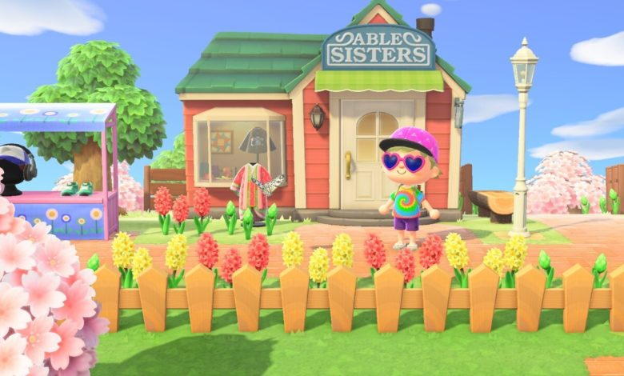 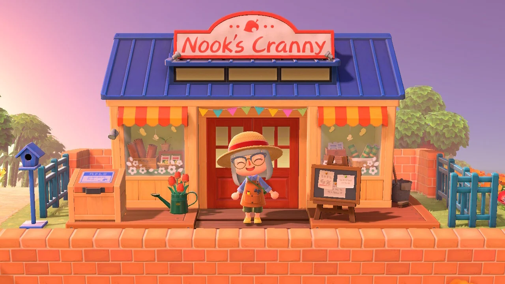
7. Talk to all villagers! One villager is alway crafting and they change in the morning,
afternoon, and evening. The crafting villager will give you a DIY recipe!
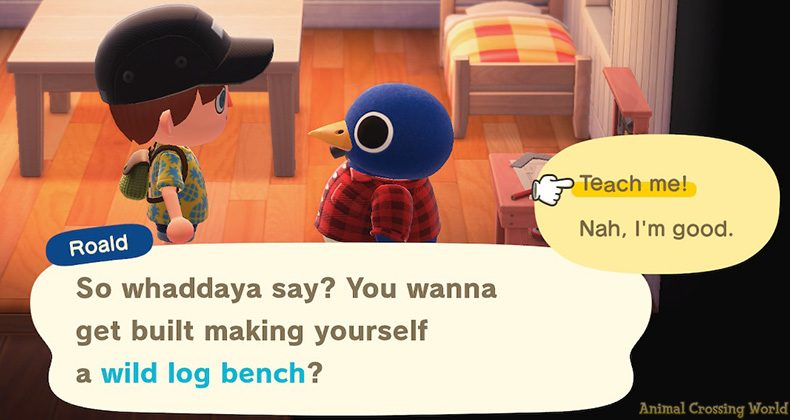
8. Find one money rock and money tree spot! One rock will give you money if you
keep hitting it all 8 times. and a glowing spot in the ground spawns once a day.
It will give you 1k bells but bury 10k bells and a few days it will triple!
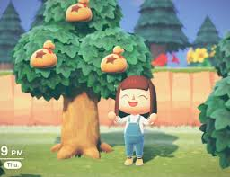
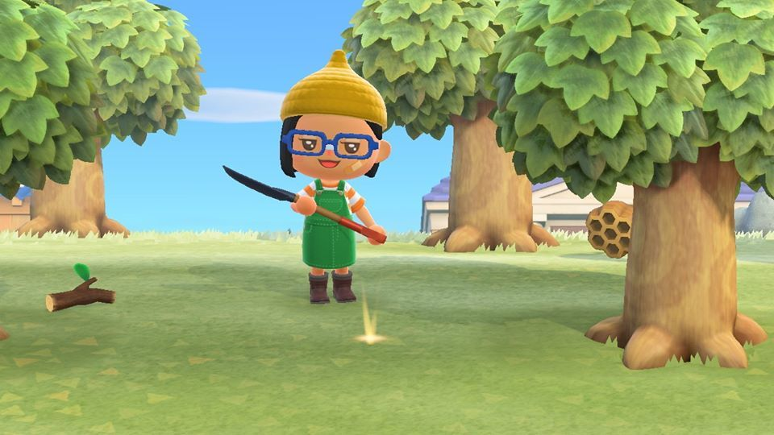
9. The Nook Miles Plus tasks will show tasks to do to get easy Nook Miles!
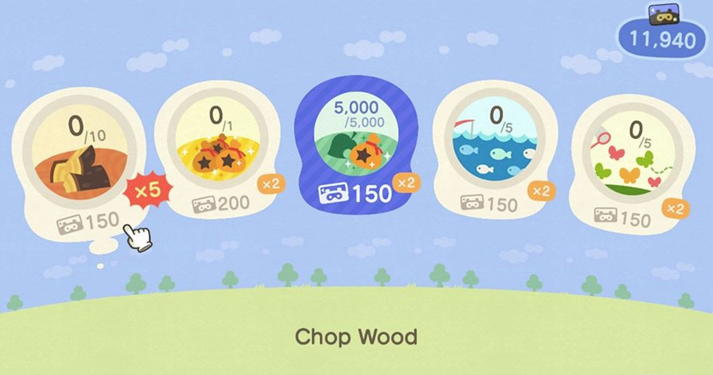
10. Shake all the non-fruit trees! Majority will drop 100 bells,
but 2 trees will drop furniture, and 5 wasps.
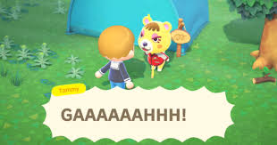